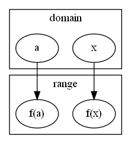

domain(定義域) / range(值域)
\( \{(x,f(x))\;|\; x\in D\} \)
\( D\xrightarrow{f}E \)

graph
Exercise
Find the doamin and the range.
\( f(x)= \sqrt[]{x+2} \)
ans.
domain:
\( x+2\geq 0 \)
\( \rightarrow x\geq -2 \)
\( \rightarrow [-2,\infty) \)
range:
\( f(x)\geq 0 \)
\( \rightarrow [0,\infty) \)
\( g(x)= \frac{1}{x^2-x} \)
ans
domain:
\( x^2-x\neq 0 \)
\( \rightarrow x(x-1) \)
\( x\neq \{0,1\} \)
\( \rightarrow (-\infty,0)\cup(0,1)\cup(1,\infty) \)
range:
\( (-\infty, \infty) \)
Piecewise Defined Function
Example:
\( f(x) \begin{cases} 1-x\;\text{if } x\leq -1 \\ x^2\;\text{if } x> -1 \end{cases} \)
Symmetry / even function
\( f(-x)=(-x)^2=x^2=f(x) \)
odd function
\( f(-x)=(-x)^3=-x^3=-f(x) \)
Linear Models
\( y=f(x)=mx+b \)
Plynomials
\( P(x)= a_nx^n + a_{n-1}x^{n-1} + a_{n-2}x^{n-2} +\dots +a_0x^0 \)
Power function
\( f(x)=x^a \)
Rational function
\( f(x)=\frac{P(x)}{Q(x)} \)
Algebraic function
\( f(x)=\sqrt[a]{g(x)} \)
Trigonometric function
example:
\( f(x)=\sin(x) \)